For each (scenario, chosen episode, seed):
[0..t*+1] for the chosen episode. Round 0..t* values stay as real experiment — no AH prediction at the intervention round.new_value: v → v (absolute)factor: f → round(experiment[focal, t*] × f) (relative, clamped to encoder y_levels)prev_<feature>[t*+1, focal]. Non-focals stay at experiment shift values. Baseline has no override.[0..t*+1] with reset_rnn=True → focal's round-t*+1 contribution, valid, switch.prev_*[t*+1] from step 3 → focal's round-t*+1 punishment.base_config: configs/simulation/counterfactual/punish_individual_late.yml
chosen_episodes: [0, 3, 7, 11, 12, 15, 19, 23]
n_seeds: 20
output_dir: artifacts/counterfactual/factor_big
grids:
- intervention_round: [4, 6, 16, 18]
feature: [punishment, contribution]
target: [individual]
selector: [lowest_contributor, highest_contributor, random]
factor: [0.33, 0.5, 0.75, 1.35, 2.0, 3.0]
prev_X[t] = X[t-1] (one-round shift in data.py::shift), with a feature-specific default at round 0.
| Feature | Definition |
|---|---|
prev_contribution | Agent's own contribution at round t-1 (int 0–20). |
prev_punishment | Punishment received from the manager at round t-1 (int 0–30). |
prev_common_good | Per-capita pool from round t-1: (1.6 × sum_c − sum_p) / n_valid of the agent's group at t-1. |
agent_group | Current group id (0/1 in 2g8a), refreshed at each switch decision. |
prev_contribution_valid | True iff the agent had input at t-1 (player_no_input == 0). |
prev_punishment_valid | Same for the manager (manager_no_input == 0). |
punishment_masked | Autoregressive feature: already-decided punishment for earlier agents in the within-round order, default for not-yet-decoded. |
autoreg_mask | True for agents still to be decoded in the current autoregressive pass. |
is_first | True only at round 0. |
8 hand-coded scenarios on individual focals (lowest- or highest-contributing agent per chosen episode). Two timings: early (t*=4 or 6) and late (t*=16 or 18).
new_value=30)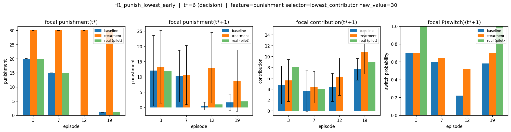
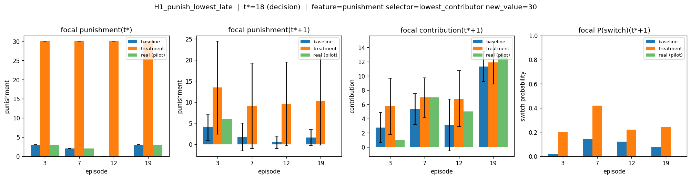
new_value=0)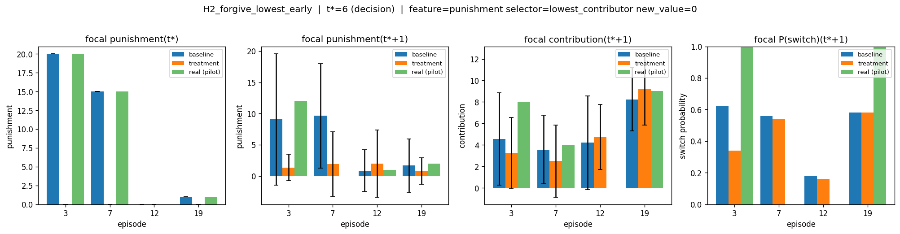
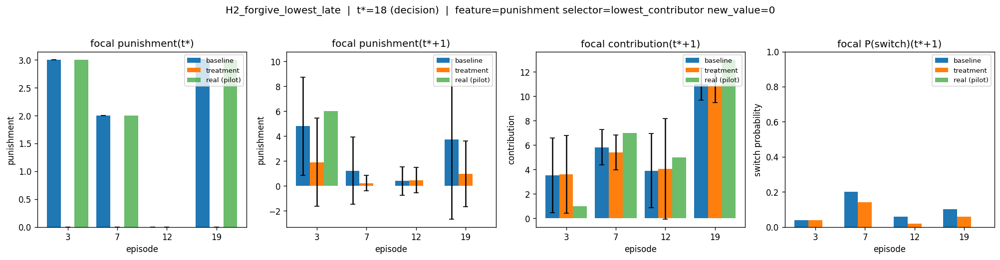
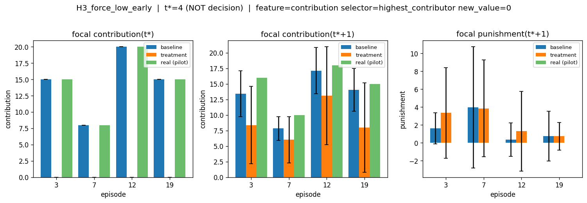
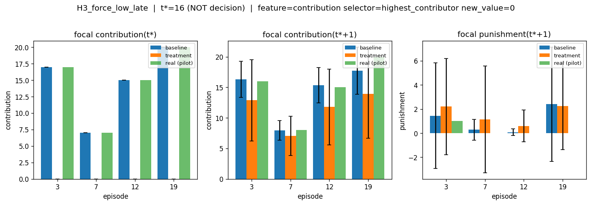
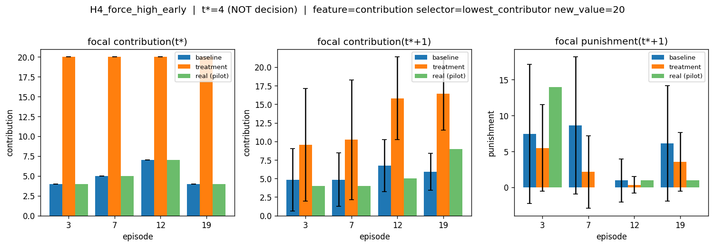
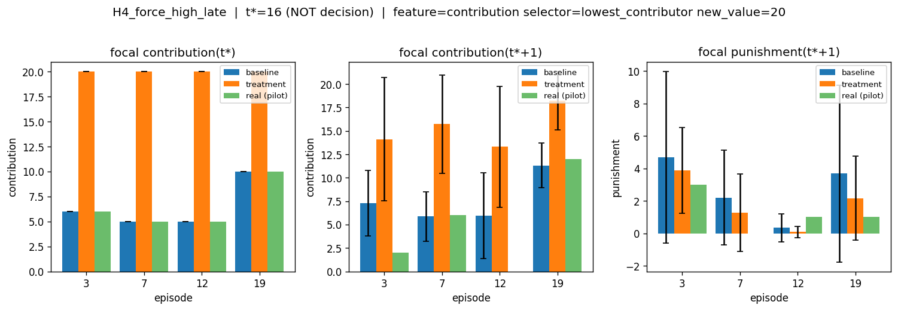
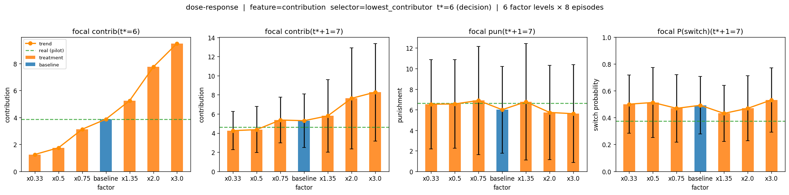
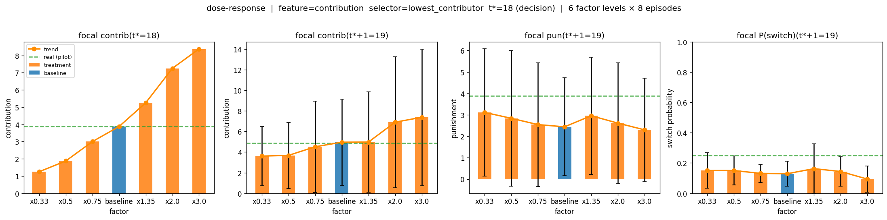
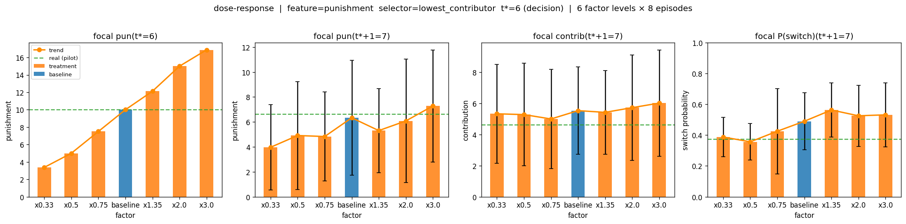
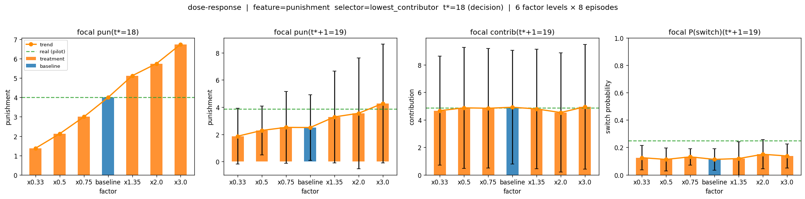
selector picks one game-group at t* (4 of 8 agents); override applies to all members.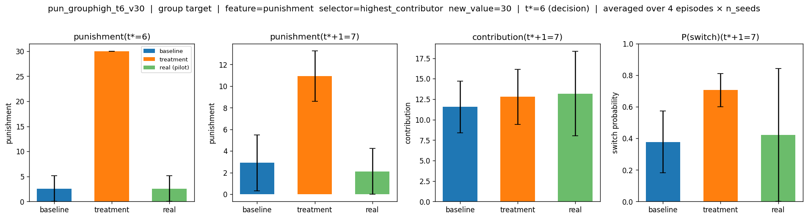
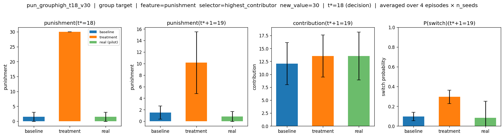
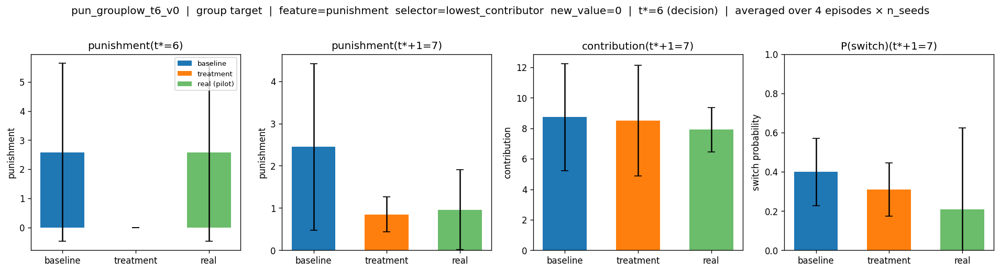
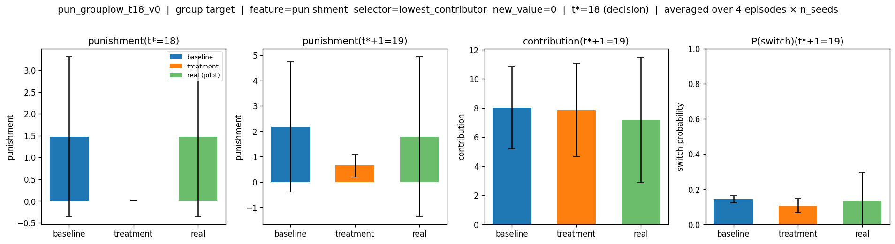
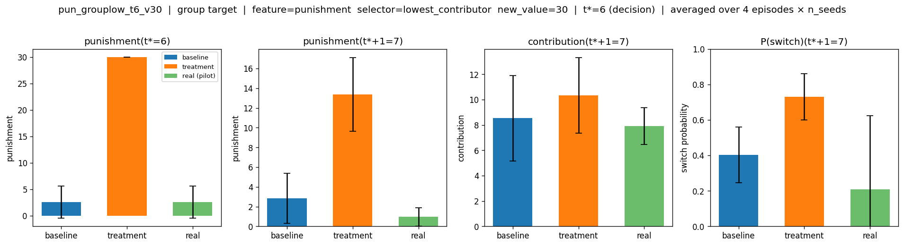
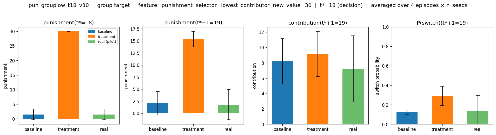
prev_contribution is high then punishments have little to no effect.